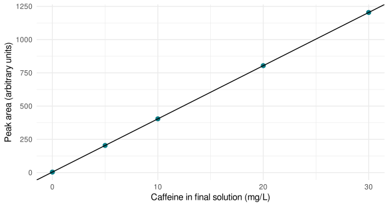
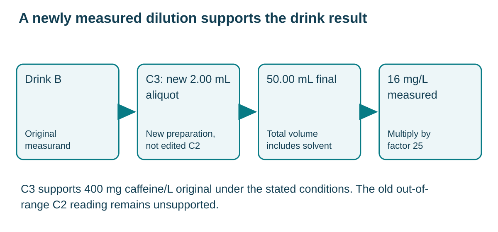
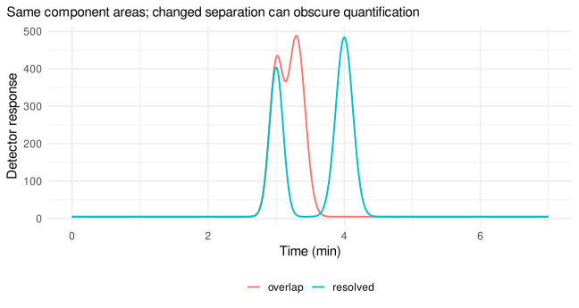
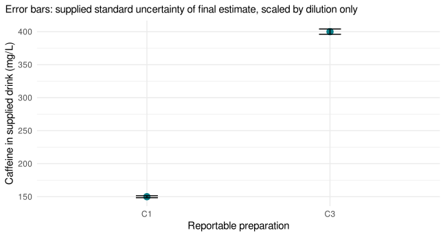
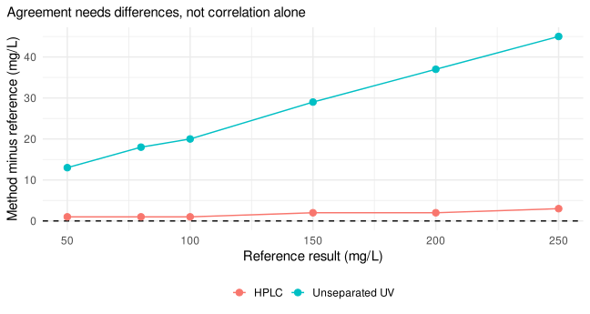
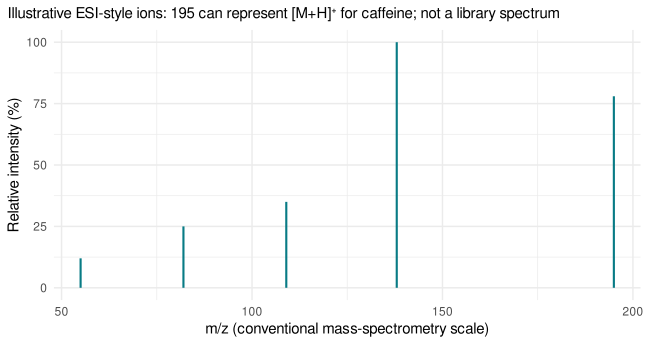

Choosing and defending a result
Build and defend the complete analytical argument
Start with the claim you need to defend

Different analytical questions call for elemental detection, molecular separation, titration or ion-activity measurement.
Caffeine concentration in supplied drinks, with explicit limitations.
Choose a method for the chemical quantity

Different analytical questions call for elemental detection, molecular separation, titration or ion-activity measurement.
Elemental copper and molecular caffeine require different evidence.
A selective enough signal still needs calibration

In reversed-phase HPLC, changing organic modifier often changes retention. Re-equilibrate before the next injection.
Separation, identity evidence and response calibration work together.
Read this calibration and range

The independent final-case line is area equals four plus forty times caffeine concentration, over zero to thirty mg/L.
Area = 4 + 40 × concentration; 0–30 mg/L final.
Check independently before using it

A blank, independent reference check and a sample spike examine different parts of the measurement.
The 15.00 mg/L check recovers 100.67%.
Inspect preparation history

C3 supports 400 mg caffeine/L original under the stated conditions. The old out-of-range C2 reading remains unsupported.
Which factor applies to each sample?
C1 supports a conditional result
The independent final-case line is area equals four plus forty times caffeine concentration, over zero to thirty mg/L.
Area 604 → 15 mg/L final → 150 mg/L drink A.
C2 needs a new measurement
The independent final-case line is area equals four plus forty times caffeine concentration, over zero to thirty mg/L.
Area 1604 gives a candidate 40 mg/L final, outside range.
C3 supplies that new preparation
C3 supports 400 mg caffeine/L original under the stated conditions. The old out-of-range C2 reading remains unsupported.
Area 644 → 16 mg/L final; factor 25 → 400 mg/L drink B.
C4 fails selectivity despite passing range

The same component areas appear resolved or overlapping when their retention-time spacing changes.
An unresolved component contributes to the integrated peak.
Export decisions with the values

The result applies to a defined material under a defined procedure; the signal alone does not define the measurand.
Withheld results are missing estimates with reasons, not zero concentrations.
Read the uncertainty bars correctly

Accepted preparations give 150 and 400 mg/L original caffeine; bars show limited scaled standard uncertainties.
C1: standard uncertainty 1.5 mg/L. C3: 4.0 mg/L.
Do not infer perfect uncertainty from rounded ideal data
The independent final-case line is area equals four plus forty times caffeine concentration, over zero to thirty mg/L.
A zero calibration residual does not prove a perfect method.
Compare methods through discrepancies

Nonspecific UV positive discrepancies grow with reference concentration; HPLC discrepancies remain much smaller.
Does a strong association establish agreement?
A concentration-dependent difference needs investigation
Nonspecific UV positive discrepancies grow with reference concentration; HPLC discrepancies remain much smaller.
The nonspecific UV discrepancy grows across reference samples.
What does MS contribute?
![For a singly protonated molecule, [M+H]⁺ is about one mass unit above neutral M. Fragments and multiple charges require interpretation.]()
For a singly protonated molecule, [M+H]⁺ is about one mass unit above neutral M. Fragments and multiple charges require interpretation.
Ions carry information about mass-to-charge and fragmentation.
The source determines which ions can appear
![For a singly protonated molecule, [M+H]⁺ is about one mass unit above neutral M. Fragments and multiple charges require interpretation.]()
For a singly protonated molecule, [M+H]⁺ is about one mass unit above neutral M. Fragments and multiple charges require interpretation.
Neutral molecular mass is not automatically the observed m/z.
Interpret one plausible caffeine ion

Illustrative ion sticks include m/z 195; the pattern is not an authentic caffeine library spectrum.
Nominal neutral mass 194; singly protonated [M+H]⁺ near m/z 195.
Combine independent dimensions of evidence
![For a singly protonated molecule, [M+H]⁺ is about one mass unit above neutral M. Fragments and multiple charges require interpretation.]()
For a singly protonated molecule, [M+H]⁺ is about one mass unit above neutral M. Fragments and multiple charges require interpretation.
Retention, suitable ion evidence, standards and blanks can strengthen an assignment.
Write an auditable conclusion
Accepted preparations give 150 and 400 mg/L original caffeine; bars show limited scaled standard uncertainties.
What is supported, what is withheld, and what action is needed?
Render without hidden session state

The result applies to a defined material under a defined procedure; the signal alone does not define the measurand.
Start from original data, saved code and preparation records.
Transfer the evidence, not just the equation
The independent final-case line is area equals four plus forty times caffeine concentration, over zero to thirty mg/L.
Area 804; 4.00 mL to 40.00 mL; accepted separation and QC.
What would change your decision?

Different analytical questions call for elemental detection, molecular separation, titration or ion-activity measurement.
Name the additional chemical or measurement evidence required.
Take the reasoning into R
Open the student lesson.
Save the calculation and a chemical interpretation in your reproducible report.
Interactive experiment · Predict, change, explain.


![For a singly protonated molecule, [M+H]⁺ is about one mass unit above neutral M. Fragments and multiple charges require interpretation.](../assets/course/mass-spectrometer.svg)